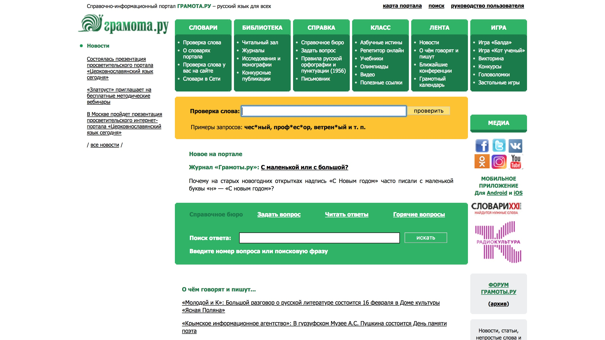

Домашнее задание 1
Данные об исследователе
ФИО: Маркова Екатерина Александровна
Место учебы: Национальный исследовательский университет "Высшая школа экономики", ОП "Филология", 1 курс
Научные интересы: история визуальных искусств, кураторство выставок, культурология, история философии, веб-разработка, комиксы
О себе: люблю покупать книжки по искусствоведению больше, чем читать книжки по искусствоведению
Как современные технологии могут помочь филологу?
Здесь следует сказать о digital humanities - области исследования на стыке компьютерных и гуманитарных наук, которая открывает новые возможности для сбора, визуализации и анализа данных. В общих чертах современные технологии:
- помогают структурировать и облегчают поиск информации
- порождают новые вопросы и подходы к исследованию
- помогают сохранить хрупкие памятники культуры и реконструировать утраченные фрагменты
- обеспечивают междисциплинарное взаимодействие гуманитарных наук
В инструментарии филолога появляется нужная оптика для исследования несравнимо большего объема информации, что позволяет ясно увидеть макропроцессы и масштабные эволюционные тенденции в литературе и языке.
Анализ сайта
- Сложно сфокусироваться из-за обилия элементов на странице
- Много лишней информации на стартовой странице (ссылки на социальные сети, новости, ссылки на мобильные приложения)
- Меню следовало бы свернуть в одну строку, а подпункты отображать при наведении
- Единственный элемент дизайна, задающий поведение пользователя — цветовая схема
- Сайт не соответствует современным трендам веб-дизайна